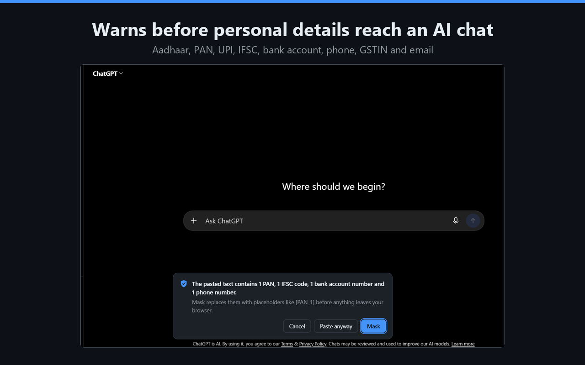
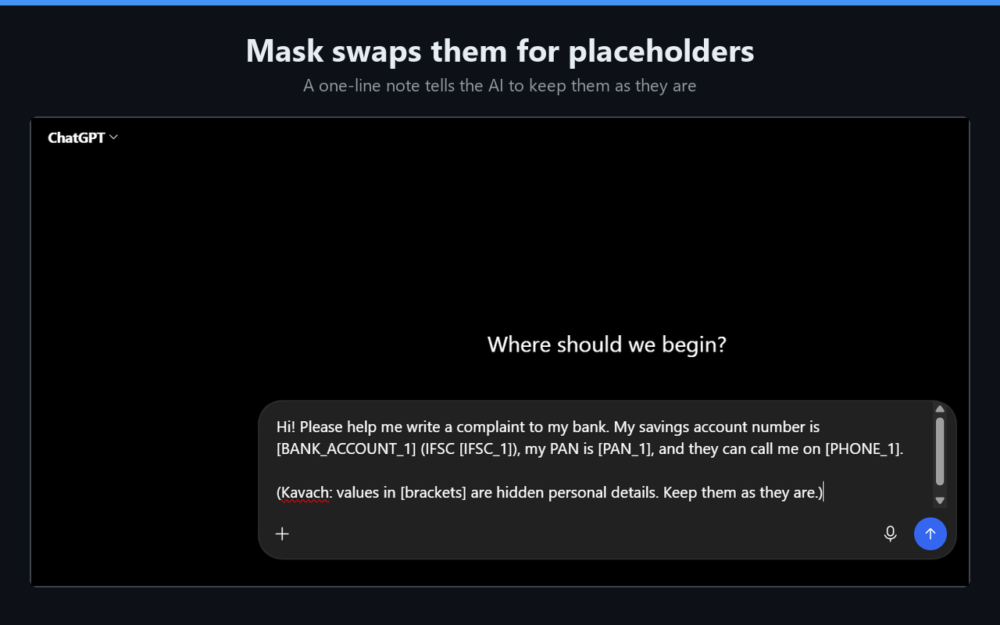
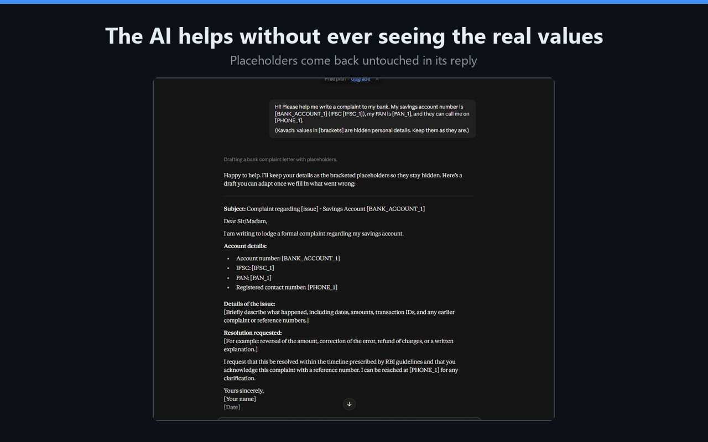

Kavach
Kavach
Keep your Aadhaar, PAN and UPI out of AI chats
Kavach (कवच, "shield") warns you before you paste or send Indian personal details to
ChatGPT, Claude or Gemini, and swaps them for placeholders like [PAN_1]. It
runs entirely on your device.
Free and open source (MIT). Interface in English and Hindi.



What it detects
Aadhaar
12 digits, checked with the official Verhoeff check digit.
PAN
Format and holder-type letter.
UPI ID
name@okaxis, number@paytm and other handles.
Bank details
IFSC codes, and account numbers when "account", "a/c" or "khata" is nearby.
Mobile number
Indian mobiles with +91, 0 or 10 digits.
GSTIN and email
GSTIN with its check character; standard email addresses.
Understands English, Hinglish and Hindi context: "mera aadhaar", "khata number", "मोबाइल".
Private by design
- Runs entirely on your device. The extension makes no network requests at all.
- Your messages are never stored, logged or sent anywhere.
- Works only on chatgpt.com, claude.ai and gemini.google.com.
- Stores only on/off switches and counts such as "PAN: 3", which you can reset.
- Open source, so anyone can check these claims.
Read the full privacy policy. Kavach reduces risk but can miss things, so check before you send. It is not legal advice.
Accuracy
On a public synthetic benchmark of 600 held-out sentences in English, Hinglish and Hindi, none of which were used to tune Kavach:
| Kavach | Presidio, default | Presidio + Indian recognizers | |
|---|---|---|---|
| Personal values masked | 95.7% | 55.9% | 79.3% |
| Clean sentences wrongly flagged | 32 / 141 | 44 / 141 | 65 / 141 |
Compared with Microsoft Presidio 2.2.364. Full results, weak spots and how to reproduce them.
For developers
The same detection engine is a Python package with no dependencies. Mask before the LLM call, restore after:
pip install kavach-piifrom kavach import Kavach
session = Kavach().session()
safe = session.mask("My PAN is ABCPE1234F, refund to rahul@okaxis")
# 'My PAN is [PAN_1], refund to [UPI_1]'
reply = call_llm(safe)
print(session.unmask(reply))
Also a command-line scanner (kavach scan) for pre-commit and CI checks, and an
MCP server
(pip install "kavach-pii[mcp]") that lets AI assistants such as Claude work
from a redacted copy of a file without seeing the personal data in it.
Read the docs ·
PyPI